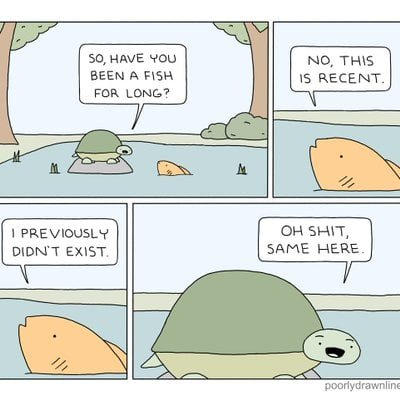
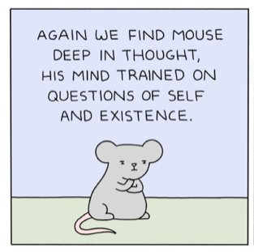

--Osho
"Your ideas about yourself change from day to day and from moment to moment. Your self image is the most changeful thing you have."
--Nisargadatta
"`You' and `he' -- these appear only when `I' does."
--Bhagavan
“The fear of no-self is the mother of all fears, the one upon which all others are based. No fear is so small or petty that the fear of no-self isn't at its heart. All fear is ultimately fear of no-self."
--Jed McKenna
As my holiday gift to you, I thought it might be nice to learn how to build a self. Kinda like Build-a-Bear, just not quite as cuddly.
Because what better gift than creating a you to BE. Since of course there must be a you.
1) So start by locating the self. In order for you to exist, you have to be somewhere. This requires you to be a thing, an object. Being a thing fills space, avoiding scary emptiness and nothingness.
In fact, cover all bases and create an “inside”, too. Call that “inner you,” your True Self.
It’s changeable, though- the Inner Self’s thoughts and feelings vary with the weather. So it can’t really be the True one. But still.
Creating this inner you enables there to now be 2 somethings, a true and a false self. Yay for extra emptiness-filling!
Even better, now the inside can be filled up with alcohol and food and an inner child requiring unending attention and problem solving.
Nice!
2) There must be a past. There has to be a creation backstory. “Here I am, and this is how I got here.” Tell that story on repeat. Memorize, reinforce, re-live. Use thoughts and images both mental and physical to prove veracity.
Like #1, this also locates and places you. Without a story of a past, there’s no way to exist as anything more than a fleeting current experience (as opposed to an experiencER.) There can simply be no you without the past. So replay for a lifetime, the tale of what is long gone.
If it was ever there.
3) Build in importance. Make self the center of everything- dreams, situations, memories, thoughts. Keep attention on this important thing at all times. Support its significance with fault, guilt, blame, shame, and responsibility. Because hey, Important-You made the mess, Important-You must fix it.
4) Evaluate. Monitor and keep your eye on the self. How’s it doing? Is it OK? Is it good enough? Did it do the right thing, does it know what it’s doing, does it need more enlightenment, does it need fixing? Well of course it does. Perfect. Get to fixin.
Evaluate and watch your own self, with that very same self. Notice who it’s up to, to find and solve the problems of self.
5) Monitor others’ thoughts too. Y’know, about you. (see #3.) After all, their thoughts have the power to “make you” upset or happy. Which means their thoughts make you. So regardless of logic or lack thereof, monitor: ”Do they like me? Did I impress them, do they think I’m smart, talented, attractive? Do they see me, get me, admire me?”
5a) Attempt to control what others think. About you in particular. Find ways to fool them so they don’t discover you’re a loser, weak, unlovable, or a failure who never came close to reaching full potential. Whatever that is.
This way, “I’m right about me because others see me and think so too” can be used as further proof of your existence. Never mind those others have an equally urgent investment in believing in you, just like you believe in them.
6) Compare. “Are those others better than I am? Am I ugly compared to them, unliked compared to them, weird, less talented, less enlightened compared to them?” Comparing tells you who you are.
Because that’s what everything’s about.
7) Make the body’s senses top priority. See it to believe it. Hear it. Feel those feelings. Surely that contraction in the chest or that dislike of sadness proves something. How do you know you exist? You see, hear, feel.
8) See your self as uniquely suffering, with flaws which are obviously worse than others’. Insist on that uniqueness (“I’m not like other people, I’m weird, others may also be anxious but mine is worse,”) while simultaneously striving extra-hard to be “normal,” and part of some crowd. The right enlightenment group, the right political side, the right sports team. Be part of a tribe, a family of like-minded others.
Because sure you may esteem being special and different but after all, there’s safety in numbers.
9) Try to live up to concepts like meaning, purpose, goals, goodness, rightness, and potential. I’s not clear exactly what these things are- I mean, they’re not even things- but they seem to be necessary.
10) Resist with all you’ve got, anything and everything that might have potential to help see through the mist, the façade, the fakery of all this. Claim to want to understand while arguing fiercely, angrily, dismissively, that of course you exist, you’re RIGHT HERE!
Let fear and annoyance and looking in all the wrong places deter you from noticing nothingness.
After noticing that fear shows up anytime possible emptiness begins to be sensed,("Oh this is scary!), ask, "Then what IS there? What’s real? What am I?” Get stuck there.
Certainly don’t notice or wait for what might come just after.
Ok, so, fine. Do you ever have to get this? Do you ever have to stop building this bear?
Of course not. Absolutely nothing needs the self to know whether it’s real or not.
Besides, whatever you are, you are already that anyway.
Known or not, understood or not, seen or not, you’re still whatever you are.
Which may or may not turn out to be nothing.
Luckily, nothing cares.
So you may as well enjoy being a well-built and cuddly bear.
And maybe not much else.

